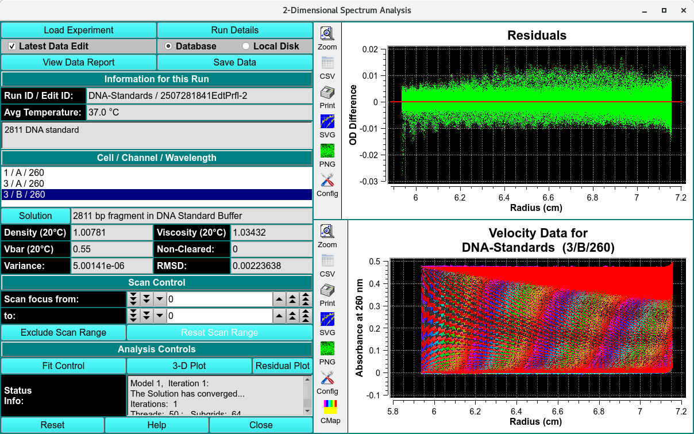

2-Dimensional Spectrum Analysis Process¶
2DSA Process:¶
Step 1: First, load experimental velocity data. Click on “Load Data” to select an edited velocity data set from the database or from local disk.
Step 2: Secondly, open an analysis control window by clicking on “Fit Control”. Within that dialog, define the grids and iterations that comprise the analysis.
Step 3: Next, after having specified analysis parameters, begin the fit analysis by clicking “Start Fit”.
Step 4: Display and Save Results: After simulation, a variety of options are available for displaying simulation results, residuals, and distributions. Report text files and graphics plot files can also be generated.
Fitting Analysis Process:¶
Step 1: Define the Grids: First, define the overall solute grid with Fitting Controls giving an s and f/f0 range; and divide that total grid into subgrids using Grid Refinements.
Step 1: Set Refinement Iterations: Secondly, set a value for Maximum Iterations of refinement passes.
Step 1: Set any Meniscus/Monti Carlo: Thirdly, if desired, set parameters defining a Meniscus scan or set of Monte Carlo iterations.
Step 1: Set Threads: Next, after control values are set, define a number of threads that is appropriate to the complexity of the run and the number of processors or cores available on your machine.
Step 1: Start the Fit: Begin the fit analysis by clicking “Start Fit”.
Step 1: Display and Save Results: After simulation, a variety of options are available for displaying simulation results, residuals, and distributions. Report text files and graphics plot files can also be generated.

2-Dimensional Spectrum Simulated